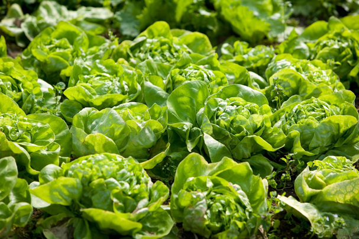

Lechugas

Tiempo de cultivo: 6-8 semanas.
Cuidados: Mantener en un ambiente con temperatura controlada (18-22°C).
Plagas comunes: Pulgones y babosas. Se recomienda usar controles biológicos.
Requerimientos hidropónicos: pH entre 5.5 y 6.5, iluminación de al menos 12 horas al día.